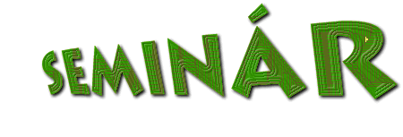

| seminár.host.sk (defunct) |
|
Na tejto stránke sa môžete dozvedieť základné informácie o stredoškolských a základoškolských korešpondenčných seminároch. Pri každom seminári zo zoznamu vľavo je uvedený stručný popis, kontaktná adresa a www-stránka. Novinka: Seminare SKMS, BKMS, časť STROMu a KŠ SK MO sa zlúčili. Od septembra 2002 už SKMS, BKMS a KŠ SK MO prestávajú fungovať a fungovať začne nový seminár KMS. Okrem toho je tu ďalší oznam: čoskoro začne fungovať stránka s podobnou tematikou, na stránke nadácie Ingenium (defunct). Ak pokryje doterajšiu pôsobnosť tejto stránky, táto stránka ako taká tiež prestane existovať. Stránka ViSNI sa venuje školeniam vedúcich sústredení. |
Posledn modifikcia: Thursday, May 30, 2002 20:47